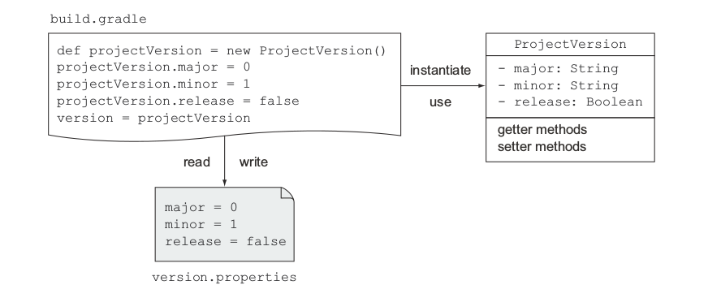
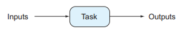
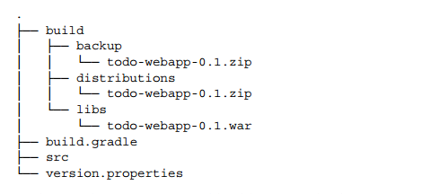
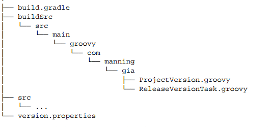

管理任务
每个新创建的任务都是 org.gradle.api.DefaultTask 类型， org.gradle.api.Task 的标准实现，DefaultTask 所有的域都是私有的，意味着他们只能通过 setter 和 getter 方法来访问，庆幸的是Groovy提供了一些语法糖来允许你通过名字来使用域。
管理项目的版本
许多公司或者开源组织有他们自己的发布版本的措施，一般用主版本号和次版本号来表示，也会用SNAPSHOT来表示项目正在开发中，版本号是通过String类型来表示，如果你想准确获得项目的主版本号，那应该怎么办？使用正则表达式匹配点号然后过滤得到主版本号和次版本号？如果我们用一个类来表示是不是更简单？
你可以很简单的通过类的域来设置、查询和修改你的版本号的某个部分，甚至你可以把版本信息直接保存在一个文件里，比如一个文件或者数据库里，避免通过修改构建脚本来更改版本号，如下图所示：

通过编程来控制版本对于自动化项目生命周期很有必要，比如：你的代码通过了单元测试准备交付了，当前的版本是1.3-SNAPSHOT,在打包成war文件之前你想把它变成发布版本1.3然后自动部署到服务器中，这些步骤可以划分为多个任务：一个用来修改项目的版本号另一个用于打包WAR文件。
声明任务的动作(actions)
动作就是在你的任务中放置构建逻辑的地方，Task接口提供了两个方法来声明任务的动作： doFirst和doLast，当任务执行的时候，定义在闭包里的动作逻辑就按顺序执行。
接下来我们会写一个简单的任务printVersion,任务的作用就是打印项目的版本号，在任务 的最后一个动作定义这个逻辑。
version = '0.1-SNAPSHOT'
task printVersion {
doLast {
println "Version: $version"
}
}
前面我们讲过左移操作符是方法doLast的快捷键，他们的作用是一样的，当你执行gradle printVersion,你应该得到下面的输出：
gradle printVersion
:printVersion
Version: 0.1-SNAPSHOT
如果你用doFirst方法的话输出的结果是一样的：
task printVersion {
doFirst {
println "Version: $version"
}
}
给已经存在的任务添加动作
到目前为止，你只是给printVersion这个任务添加了单个动作，要么是第一个或者最后一个，对于每个任务可以有多个动作，实际上，当任务创建的时候你可以添加任意多个动作，每一个任务都有一个动作清单，他们在运行的时候是执行的，接下来我们来修改之前的例子：
task printVersion {
//任务的初始声明可以添加first和last动作
doFirst {
println "Before reading the project version"
}
doLast {
println "Version: $version"
}
}
//你可以在任务的动作列表的最前面添加其他任务，比如：
printVersion.doFirst { println "First action" }
由此可知，我们可以添加额外的动作给已经存在的任务，当你想添加动作的那个任务不是你自己写的时候这会非常有用，你可以添加一些自定义的逻辑，比如你可以添加doFirst动作到compile-Java任务来检查项目是否包含至少一个source文件。
访问任务属性
接下来我们来改善一下输出版本号的方法，Gradle提供一个基于SLF4J库的日志实现，除了实现了基本的日志级别（DEBUG, ERROR, INFO, TRACE, WARN)）外，还添加了额外的级别，日志实例可以通过任务的方法来直接访问，接下来，你将用QUIET级别打印项目的版本号：
task printVersion << {
logger.quiet "Version: $version"
}
访问任务的属性是不是很容易？接下来我将给你展示两个其他的属性，group和description，两个都是documentation任务的一部分，description属性简短的表示任务的目的，group表示任务的逻辑分组。
task printVersion(
group: 'versioning',
description: 'Prints project version.') << {
logger.quiet "Version: $version"
}
你也可以通过setter方法来设置属性：
task printVersion {
group = 'versioning'
description = 'Prints project version.'
doLast {
logger.quiet "Version: $version"
}
}
当你运行gradle tasks,你会看到任务显示在正确的分组里和它的描述信息：
gradle tasks
:tasks
...
Versioning tasks
----------------
printVersion - Prints project version.
...
定义任务依赖
dependsOn方法用来声明一个任务依赖于一个或者多个任务，接下来通过一个例子来讲解运用不同的方法来应用依赖：
task first << { println "first" }
task second << { println "second" }
//声明多个依赖
task printVersion(dependsOn: [second, first]) << {
logger.quiet "Version: $version"
}
task third << { println "third" }
//通过任务名称来声明依赖
third.dependsOn('printVersion')
你可以通过命令行调用third任务来执行这个任务依赖链：
$ gradle -q third
first
second
Version: 0.1-SNAPSHOT
third
仔细看这个执行顺序，你有没用发现printVersion声明了对second和first任务的依赖，但是first在second任务前执行了，Gradle里面任务的执行顺序并不是确定的。
任务依赖执行顺序
Gradle并不保证依赖的任务能够按顺序执行，dependsOn方法只是定义这些任务应该在这个任务之前执行，但是这些依赖的任务具体怎么执行它并不关心，如果你习惯用命令式的构建工具来定义依赖（比如ant）这可能会难以理解。在Gradle里面，执行顺序是由任务的输入输出特性决定的，这样做有很多优点，比如你想修改构建逻辑的时候你不需要去了解整个任务依赖链，另一方面，因为任务不是顺序执行的，就可以并发的执行来提高性能。
终结者任务
在实际情况中，你可能需要在一个任务执行之后进行一些清理工作，一个典型的例子就是Web容器在部署应用之后要进行集成测试，Gradle提供了一个finalizer任务来实现这个功能，你可以用finalizedBy方法来结束一个指定的任务：
task first << { println "first" }
task second << { println "second" }
//声明first结束后执行second任务
first.finalizedBy second
你会发现任务first结束后自动触发任务second：
$ gradle -q first
first
second
添加随意的代码
接下来我们来学习怎么在build脚本中定义一些随机的代码，在实际情况下，如果你熟悉Groovy的语法你可以编写一些类或者方法，接下来你将会创建一个表示版本的类，在Java中一个class遵循bean的约定（POJO），就是添加setter和getter方法来访问类的域，到后面发现手工写这些方法很烦人，Groovy有个对应的概念叫POGO(plain-old Groovy object),他们的setter和getter方法在生成字节码的时候自动添加，因此运行的时候可以直接访问，看下面这个例子：
version = new ProjectVersion(0, 1)
class ProjectVersion {
Integer major
Integer minor
Boolean release
ProjectVersion(Integer major, Integer minor) {
this.major = major
this.minor = minor
this.release = Boolean.FALSE
}
ProjectVersion(Integer major, Integer minor, Boolean release) {
this(major, minor)
this.release = release
}
@Override
String toString() {
//只有release为false的时候才添加后缀SNAPSHOT
"$major.$minor${release ? '' : '-SNAPSHOT'}"
}
}
当运行这个修改的脚本之后，你可以看到printVersion的输出和之前一样，但是你还是得手工修改build脚本来更改版本号，接下来你将学习如何把版本号存储在一个文件里然后配置你的脚本去读取这个配置。
任务的配置
在你写代码之前，你要新建一个属性文件version.properties,内容如下：
major = 0
minor = 1
release = false
添加任务配置块
接下来我们将声明一个任务loadVersion来从属性文件中读取版本号并赋给ProjectVersion实例，第一眼看起来和其他定义的任务一样，仔细一看你会注意到你没有定义动作或者使用左移操作符，在Gradle里称之为任务配置块(task configuration)。
ext.versionFile = file('version.properties')
//配置任务没有左移操作符
task loadVersion {
project.version = readVersion()
}
ProjectVersion readVersion() {
logger.quiet 'Reading the version file.'
//如果文件不存在抛出异常
if(!versionFile.exists()) {
throw new GradleException("Required version file does not exist:$versionFile.canonicalPath")
}
Properties versionProps = new Properties()
//groovy的file实现了添加方法通过新创建的流来读取
versionFile.withInputStream { stream ->
versionProps.load(stream)
}
//在Groovy中如果这是最后一个语句你可以省略return关键字
new ProjectVersion(versionProps.major.toInteger(),
versionProps.minor.toInteger(), versionProps.release.toBoolean())
}
接下来运行printVersion，你会看到loadVersion任务先执行了：
$ gradle printVersion
Reading the version file.
:printVersion
Version: 0.1-SNAPSHOT
你也许会很奇怪这个任务是怎么调用的，你没有声明依赖，也没有在命令行中调用它。任务配置块总是在任务动作之前执行的，理解这个行为的关键就是Gradle的构建生命周期，我们来看下Gradle的构建阶段：

Gradle的构建生命周期
无论你什么时候执行一个gradle build,都会经过三个不同的阶段：初始化、配置和执行。
在初始化阶段，Gradle给你的项目创建一个Project实例，你的构建脚本只定义了单个项目，在多项目构建的上下文环境中，构建的阶段更为重要。根据你正在执行的项目，Gradle找出这个项目的依赖。
下一个阶段就是配置阶段，Gradle构建一些在构建过程中需要的一些模型数据，当你的项目或者指定的任务需要一些配置的时候这个阶段很有帮助。
记住不管你执行哪个build哪怕是gradle tasks配置代码都会执行
在执行阶段任务按顺序执行，执行顺序是通过依赖关系决定的，标记为up-to-date的任务会跳过，比如任务B依赖于任务A，当你运行gradle B的时候执行顺序将是A->B。
声明任务的输入和输出
Gradle通过比较两次build之间输入和输出有没有变化来确定这个任务是否是最新的，如果从上一个执行之后这个任务的输入和输出没有发生改变这个任务就标记为up-to-date，跳过这个任务。

输入可以是一个目录、一个或者多个文件或者随机的属性，任务的输出可以是路径或者文件，输入和输出在DefaultTask类中用域来表示。假设你想创建一个任务把项目的版本由SNAPSHOT改为release，下面的代码定义一个新任务给release变量赋值为true，然后把改变写入到文件中。
task makeReleaseVersion(group: 'versioning', description: 'Makes project a release version.') << {
version.release = true
//ant的propertyfile任务提供很方便的方法来修改属性文件
ant.propertyfile(file: versionFile) {
entry(key: 'release', type:'string',operation: '=', value: 'true')
}
}
运行这个任务会修改版本属性并写入到文件中。
$ gradle makeReleaseVersion
:makeReleaseVersion
$ gradle printVersion
:printVersion
Version: 0.1
编写自定义的任务
makeReleaseVersion的逻辑比较简单，你可能不用考虑代码维护的问题，随着构建逻辑越来越复杂，你添加了越来越多的简单的任务，这时候你就有需要用类和方法来结构化你的代码，你可以把你编写源代码的那一套代码实践搬过来。
编写自定义任务类
之前提到过，Gradle会给每一个任务创建一个DefaultTask类型的实例，当你要创建一个自定义的任务时，你需要创建一个继承自DefaultTask的类，看看下面这个例子：
class ReleaseVersionTask extends DefaultTask {
//通过注解声明任务的输入和输出
@Input Boolean release
@OutputFile File destFile
ReleaseVersionTask() {
//在构造器里设置任务的分组和描述
group = 'versioning'
description = 'Makes project a release version.'
}
//通过注解声明要执行的任务
@TaskAction
void start() {
project.version.release = true
ant.propertyfile(file: destFile) {
entry(key: 'release', type: 'string', operation: '=', value: 'true')
}
}
}
通过注解来表达输入和输出
任务输入和输出注解给你的实现添加了语法糖，他们和调用TasksInputs和TaskOutputs方法是一样的效果，你一眼就知道任务期望什么样的输入数据以及会产生什么输出。我们使用@Input注解来声明输入属性release，用@OutputFile来定义输出文件。
使用自定义的任务
上面我们实现了自定义的动作方法，但是我们怎么使用这个方法，你需要在build脚本中创建一个ReleaseVersionTask类型的任务，通过给属性赋值来设定输入和输出：
//定义一个ReleaseVersionTask类型的任务
task makeReleaseVersion(type: ReleaseVersionTask) {
//设定任务属性
release = version.release
destFile = versionFile
}
复用自定义的任务
假设你在另一个项目中想使用前面这个自定义的任务，在另一个项目中需求又不太一样，用来表示版本的POGO有不同的域，比如下面这个：
class ProjectVersion {
Integer min
Integer maj
Boolean prodReady
@Override
String toString() {
"$maj.$min${prodReady? '' : '-SNAPSHOT'}"
}
}
此外，你还想把版本文件名改为project-version.properties,需要怎么做才能复用上面那个自定义的任务呢？
task makeReleaseVersion(type: ReleaseVersionTask) {
release = version.prodReady
//不同的版本文件
destFile = file('project-version.properties')
}
Gradle自带的任务类型
Gradle自带的任务类型继承自DefaultTask，Gradle提供了很多自带的任务类型，这里我只介绍两个，Zip和copy用在发布项目中。
//eg.使用任务类型来备份发布版本
task createDistribution(type: Zip, dependsOn: makeReleaseVersion) {
//引用war任务的输出
from war.outputs.files
//把所有文件放进ZIP文件的src目录
from(sourceSets*.allSource) {
into 'src'
}
//添加版本文件
from(rootDir) {
include versionFile.name
}
}
task backupReleaseDistribution(type: Copy) {
//引用createDistribution的输出
from createDistribution.outputs.files
into "$buildDir/backup"
}
task release(dependsOn: backupReleaseDistribution) << {
logger.quiet 'Releasing the project...'
}
任务依赖推导
你可能注意到上面通过dependsOn方法来显示声明两个任务之间的依赖，可是，一些任务并不是直接依赖于其他任务(比如上面createDistribution依赖于war)。Gradle怎么知道在任务之前执行哪个任务？通过使用一个任务的输出作为另一个任务的输入，依赖就推导出来了，结果依赖的任务自动执行了，我们来看一下完整的执行图：
$ gradle release
:makeReleaseVersion
:compileJava
:processResources UP-TO-DATE
:classes
:war
:createDistribution
:backupReleaseDistribution
:release
Releasing the project...
运行build之后你可以在build/distribution目录找到生成的ZIP文件，这是打包任务的默认输出目录，下面这个图是生成的目录树：

在buildSrc目录创建代码
在前面我们创建了两个类，ProjectVersion和ReleaseVersionTask，这些类可以移动到你项目的buildSrc目录，buildSrc目录是一个放置源代码的可选目录，你可以很容易的管理你的代码。Gradle采用了标准的项目布局，java代码在src/main/java目录，Groovy代码应该在src/main/groovy目录，在这些目录的任何代码都会自动编译然后放置到项目的classpath目录。这里你是在处理class，你可以把他们放到指定的包里面，假如com.manning.gia,下面显示了Groovy类在项目中的目录结构：

不过要记住把这些类放在源代码目录需要额外的工作，这和在脚本文件中定义有点不一样，你需要导入Gradle的API，看看下面这个例子：
package com.manning.gia
import org.gradle.api.DefaultTask
import org.gradle.api.tasks.Input
import org.gradle.api.tasks.OutputFile
import org.gradle.api.tasks.TaskAction
class ReleaseVersionTask extends DefaultTask {
(...)
}
反过来，你的构建脚本需要从buildSrc中导入编译的classes(比如 com.manning.gia.ReleaseVersionTask)，下面这个是编译任务输出：
$ gradle makeReleaseVersion
:buildSrc:compileJava UP-TO-DATE
:buildSrc:compileGroovy
:buildSrc:processResources UP-TO-DATE
:buildSrc:classes
:buildSrc:jar
:buildSrc:assemble
:buildSrc:compileTestJava UP-TO-DATE
:buildSrc:compileTestGroovy UP-TO-DATE
:buildSrc:processTestResources UP-TO-DATE
:buildSrc:testClasses UP-TO-DATE
:buildSrc:test
:buildSrc:check
:buildSrc:build
:makeReleaseVersion UP-TO-DATE
到此为止你学习了简单任务的创建，自定义的task类，指定Gradle API提供的task类型，查看了任务动作和任务配置的区别，以及他们的使用情形，任务配置和任务动作是在不同阶段执行的。